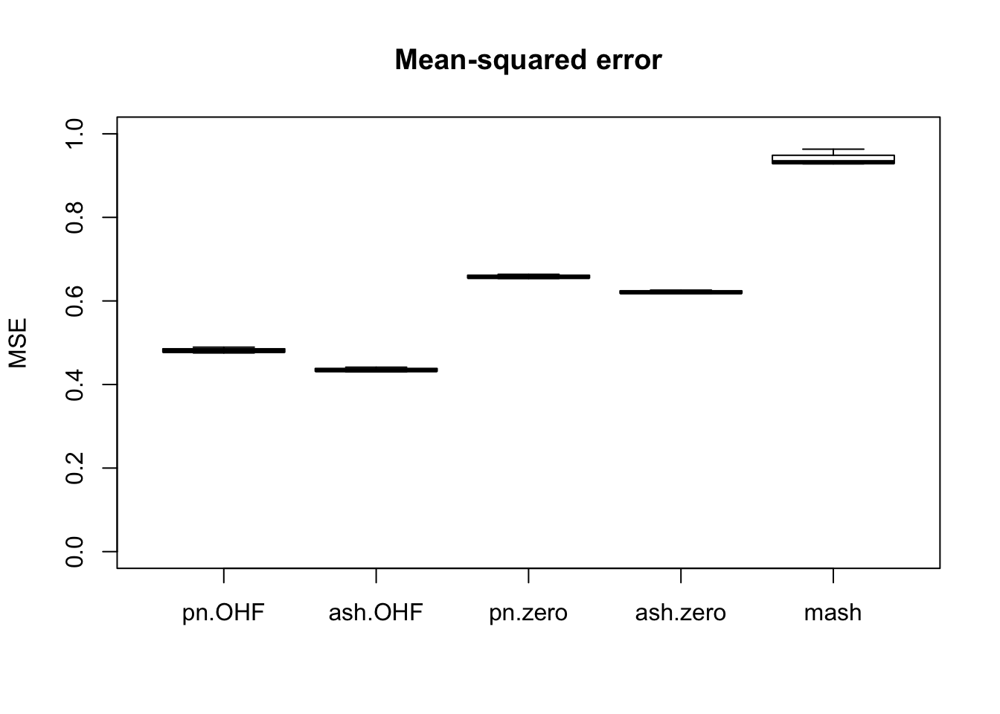
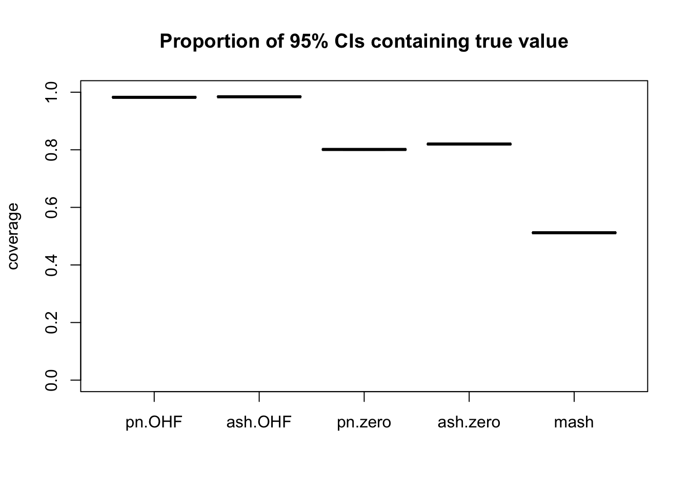
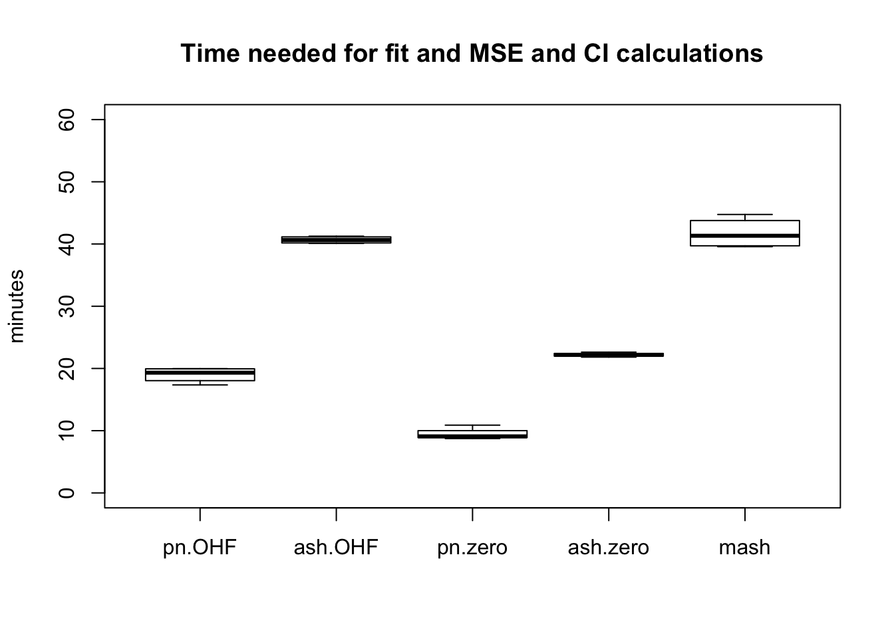

Last updated: 2018-07-30
workflowr checks: (Click a bullet for more information) ✔ R Markdown file: up-to-date
Great! Since the R Markdown file has been committed to the Git repository, you know the exact version of the code that produced these results.
✔ Environment: empty
Great job! The global environment was empty. Objects defined in the global environment can affect the analysis in your R Markdown file in unknown ways. For reproduciblity it’s best to always run the code in an empty environment.
✔ Seed:
set.seed(20180609)
The command set.seed(20180609) was run prior to running the code in the R Markdown file. Setting a seed ensures that any results that rely on randomness, e.g. subsampling or permutations, are reproducible.
✔ Session information: recorded
Great job! Recording the operating system, R version, and package versions is critical for reproducibility.
✔ Repository version: ed4cb94
wflow_publish or wflow_git_commit). workflowr only checks the R Markdown file, but you know if there are other scripts or data files that it depends on. Below is the status of the Git repository when the results were generated:
Ignored files:
Ignored: .DS_Store
Ignored: .Rhistory
Ignored: .Rproj.user/
Ignored: data/.DS_Store
Ignored: docs/.DS_Store
Ignored: docs/images/.DS_Store
Ignored: docs/images/.Rapp.history
Ignored: output/.DS_Store
Ignored: output/.Rapp.history
Ignored: output/MASHvFLASHgtex/.DS_Store
Ignored: output/MASHvFLASHrandom/
Ignored: output/MASHvFLASHsims/.DS_Store
Ignored: output/MASHvFLASHsims/backfit/.DS_Store
Ignored: output/MASHvFLASHsims/backfit/.Rapp.history
Untracked files:
Untracked: code/MASHvFLASHgtex2.R
Untracked: code/gtex3.R
Unstaged changes:
Deleted: analysis/mashvflash.Rmd
| File | Version | Author | Date | Message |
|---|---|---|---|---|
| Rmd | ed4cb94 | Jason Willwerscheid | 2018-07-30 | wflow_publish(c(“analysis/MASHvFLASHgtex.Rmd”, |
| html | 860aa52 | Jason Willwerscheid | 2018-07-22 | Build site. |
| Rmd | 3abd505 | Jason Willwerscheid | 2018-07-22 | wflow_publish(c(“analysis/MASHvFLASHsims.Rmd”, |
| html | 36a39f6 | Jason Willwerscheid | 2018-07-22 | Build site. |
| Rmd | 179099b | Jason Willwerscheid | 2018-07-22 | wflow_publish(c(“analysis/MASHvFLASHgtex.Rmd”, |
| html | b058533 | Jason Willwerscheid | 2018-07-22 | Build site. |
| Rmd | 1ecdfad | Jason Willwerscheid | 2018-07-22 | wflow_publish(“analysis/MASHvFLASHgtex.Rmd”) |
| html | ed5a35b | Jason Willwerscheid | 2018-06-26 | Build site. |
| Rmd | 8fa6b09 | Jason Willwerscheid | 2018-06-26 | wflow_publish(“analysis/MASHvFLASHgtex.Rmd”) |
| html | 97fa87c | Jason Willwerscheid | 2018-06-24 | Build site. |
| Rmd | 42cd89c | Jason Willwerscheid | 2018-06-24 | wflow_publish(c(“analysis/MASHvFLASHsims2.Rmd”, |
| html | 0397c51 | Jason Willwerscheid | 2018-06-21 | Build site. |
| Rmd | aeaca04 | Jason Willwerscheid | 2018-06-21 | wflow_publish(“analysis/MASHvFLASHgtex.Rmd”) |
| html | c599bfa | Jason Willwerscheid | 2018-06-20 | Build site. |
| Rmd | 122f83a | Jason Willwerscheid | 2018-06-20 | wflow_publish(“analysis/MASHvFLASHgtex.Rmd”) |
| html | b1ff37c | Jason Willwerscheid | 2018-06-16 | Build site. |
| Rmd | eac4059 | Jason Willwerscheid | 2018-06-16 | wflow_publish(“analysis/MASHvFLASHgtex.Rmd”) |
| html | 0aa5cc6 | Jason Willwerscheid | 2018-06-16 | Build site. |
| Rmd | d8b6331 | Jason Willwerscheid | 2018-06-16 | analysis/index.Rmd |
Here I compare MASH and FLASH fits to some GTEx data. The dataset is comprised of \(z\)-scores across 44 tissues for approximately 16000 tests, which correspond to the “top” eQTL for each gene (that is, the eQTL with the largest (absolute) raw \(z\)-score).
To evaluate the fits, I randomly delete entries from the dataset, then I fit MASH and FLASH objects and use the fitted objects to impute the missing data. I run four experiments in which I delete 1%, 5%, 10%, and 25% of entries, and I compute the mean-squared error for the imputed values and the percentage of 95% confidence intervals that contain the “true” values.
Of course, the deleted entries are observed values rather than true values, so results here should be taken with a grain of salt!
For the code used in this analysis, see below.
In addition to a MASH fit, I used the “OHF” and “Zero” methods described in my simulation study to fit FLASH objects. (Since the “Zero” and “OHL” methods give very similar results, I did not use the latter here.) For each of the FLASH methods, I produce one fit using point-normal priors (ebnm_fn = "ebnm_pn") and another fit using a more flexible class of ash priors (ebnm_fn = "ebnm_ash"). In sum, I generated a total of five fits for each experiment, which I denote as mash, pn.OHF, ash.OHF, pn.zero, and ash.zero.
Each of these methods assumes that noise is independent among conditions. It is not, but it is still useful to see how the methods compare when applied to a real dataset.
Since the experiments take a long time to run, I pre-run them and load the results from file.
fl_diag <- readRDS("./output/MASHvFLASHgtex/fldiag.rds")
fl_t <- readRDS("./output/MASHvFLASHgtex/flt.rds")
m_diag <- readRDS("./output/MASHvFLASHgtex/mdiag.rds")
m_t <- readRDS("./output/MASHvFLASHgtex/mt.rds")Comparisons of mean-squared error and confidence interval coverage are as follows. FLASH consistently outperforms MASH, with the “OHF” method outperforming the “Zero” method. Using ash priors gives slightly better results than using point-normal priors.
fl_fit_names <- c("pn.zero", "pn.OHF", "ash.zero", "ash.OHF")
method.names <- c(fl_fit_names, "mash")
all_t <- rbind(sapply(fl_t, unlist), unlist(m_t))
rownames(all_t) <- method.names
fl_mse <- sapply(fl_diag, function(x) {sapply(x, function(y) {y$mse})})
all_mse <- rbind(fl_mse, sapply(m_diag, function(x) {x$mse}))
rownames(all_mse) <- method.names
fl_ci <- sapply(fl_diag, function(x) {sapply(x, function(y) {y$ci})})
all_ci <- rbind(fl_ci, sapply(m_diag, function(x) {x$ci}))
rownames(all_ci) <- method.names
plot.order <- c(2, 4, 1, 3, 5)
boxplot(t(all_mse[plot.order, ]), ylim=c(0, 1), ylab = "MSE",
main = "Mean-squared error")
boxplot(t(all_ci[plot.order, ]), ylim=c(0, 1), ylab = "coverage",
main = "Proportion of 95% CIs containing true value")
The total time required by each method (including both the time needed to produce a fit and the time needed to compute posterior summaries) is as follows. While ash priors give slightly better results than point-normal priors, they take approximately twice as long to fit.
boxplot(t(all_t[plot.order, ]), ylim=c(0, 60), ylab="minutes",
main="Time needed for fit and MSE and CI calculations")
Of all methods, only the “OHF” methods give satisfactory results for confidence interval coverage. They also do very well in terms of mean-squared error. Indeed, I am surprised that their MSE is so much smaller than 1. The observational error is supposed to be equal to 1, so I would expect it to be very difficult for any method to achieve an MSE smaller than 1. Indeed, if the errors were uncorrelated, then this would be true, but as I mentioned above, observational errors are almost certainly correlated across tissues. Thus, much of the reason for FLASH’s success here could be due to its ability to account for such correlations. Still, the results are very encouraging.
for fitting MASH and FLASH objects…
# Fit using FLASH -------------------------------------------------------
fit_flash_zero <- function(data, Kmax, ebnm_fn="ebnm_pn",
init_fn="udv_svd", greedy=TRUE, backfit=TRUE,
warmstart=TRUE) {
if (is.matrix(data)) {
data <- flash_set_data(Y, S = 1)
}
n <- nrow(data$Y)
t0 <- Sys.time()
if (greedy) {
res <- flash_add_greedy(data, Kmax, var_type="zero",
ebnm_fn=ebnm_fn, init_fn=init_fn,
warmstart=warmstart)
fl <- res$f
} else {
fl <- flash_add_factors_from_data(data, Kmax, init_fn=init_fn)
}
t1 <- Sys.time()
if (backfit) {
res <- flash_backfit(data, fl, var_type="zero",
ebnm_fn=ebnm_fn)
fl <- res$f
}
t2 <- Sys.time()
t.greedy <- t1 - t0
t.backfit <- t2 - t1
list(f = fl, t.greedy = t.greedy, t.backfit = t.backfit)
}
fit_flash_OHL <- function(data, Kmax, ebnm_fn="ebnm_pn",
init_fn="udv_svd", greedy=TRUE, backfit=TRUE,
warmstart=TRUE) {
if (is.matrix(data)) {
data <- flash_set_data(Y, S = 1)
}
n <- nrow(data$Y)
canonical <- cbind(rep(1, n), diag(rep(1, n)))
zero.res <- fit_flash_zero(Y, Kmax, ebnm_fn, init_fn,
greedy, backfit=FALSE, warmstart)
fl <- flash_add_fixed_l(data, canonical, zero.res$f, init_fn=init_fn)
t0 <- Sys.time()
if (backfit) {
res <- flash_backfit(data, fl,
var_type="zero", ebnm_fn=ebnm_fn,
nullcheck=FALSE)
fl <- res$f
} else {
K <- flashr:::flash_get_k(fl)
res <- flash_backfit(data, fl, kset=(K - ncol(canonical) + 1):K,
var_type="zero", ebnm_fn=ebnm_fn,
nullcheck=FALSE)
fl <- res$f
}
t1 <- Sys.time()
t.backfit <- Sys.time() - t0
list(f = fl, t.greedy = zero.res$t.greedy, t.backfit = t.backfit)
}
fit_flash_OHF <- function(data, Kmax, ebnm_fn="ebnm_pn",
init_fn="udv_svd", greedy=TRUE, backfit=TRUE,
warmstart=TRUE) {
if (is.matrix(data)) {
data <- flash_set_data(Y, S = 1)
}
n <- nrow(data$Y)
canonical <- cbind(rep(1, n), diag(rep(1, n)))
t0 <- Sys.time()
fl <- flash_add_fixed_l(data, canonical)
res <- flash_backfit(data, fl, var_type="zero", ebnm_fn=ebnm_fn,
nullcheck=FALSE)
fl <- res$f
t1 <- Sys.time()
if (greedy) {
res <- flash_add_greedy(data, Kmax, fl, var_type="zero",
ebnm_fn=ebnm_fn, init_fn=init_fn,
warmstart=warmstart)
fl <- res$f
} else {
fl <- flash_add_factors_from_data(data, Kmax, fl, init_fn=init_fn)
}
t2 <- Sys.time()
K = flashr:::flash_get_k(fl)
if (backfit && K > ncol(canonical)) {
res <- flash_backfit(data, fl,
kset=(ncol(canonical) + 1):K,
var_type="zero", ebnm_fn=ebnm_fn,
nullcheck=FALSE)
fl <- res$f
}
t3 <- Sys.time()
t.greedy <- t2 - t1
t.backfit <- (t1 - t0) + (t3 - t2)
list(f = fl, t.greedy = t.greedy, t.backfit = t.backfit)
}
# Fit using MASH -------------------------------------------------------
fit_mash <- function(data) {
if (is.matrix(data)) {
data <- mash_set_data(t(Y))
}
timing <- list()
# time to create canonical matrices is negligible
U = cov_canonical(data)
t0 <- Sys.time()
m.1by1 <- mash_1by1(data)
lvl <- 0.05
strong <- get_significant_results(m.1by1, lvl)
while (length(strong) < 5 && lvl < 0.5) {
lvl <- lvl + 0.05
strong <- get_significant_results(m.1by1, lvl)
}
if (length(strong) >= 5) {
U.pca <- cov_pca(data, 5, strong)
U.ed <- cov_ed(data, U.pca, strong)
U <- c(U, U.ed)
t.ed <- Sys.time() - t0
} else {
t.ed <- as.difftime(0, units="secs")
}
t0 <- Sys.time()
m <- mash(data, U)
t.mash <- Sys.time() - t0
list(m = m, t.ed = t.ed, t.mash = t.mash)
}…for evaluating performance…
# Evaluate methods based on MSE, CI coverage, and TPR vs. FPR -----------
flash_diagnostics <- function(fl, Y, true_Y, nsamp) {
MSE <- flash_mse(fl, true_Y)
# Sample from FLASH fit to estimate CI coverage and TPR vs. FPR
fl_sampler <- flash_sampler(Y, fl, fixed="loadings")
fl_samp <- fl_sampler(nsamp)
CI <- flash_ci(fl_samp, true_Y)
ROC <- flash_roc(fl, fl_samp, true_Y)
list(MSE = MSE, CI = CI, TP = ROC$TP, FP = ROC$FP,
n_nulls = ROC$n_nulls, n_nonnulls = ROC$n_nonnulls)
}
mash_diagnostics <- function(m, true_Y) {
MSE <- mash_mse(m, true_Y)
CI <- mash_ci(m, true_Y)
ROC <- mash_roc(m, true_Y)
list(MSE = MSE, CI = CI, TP = ROC$TP, FP = ROC$FP,
n_nulls = ROC$n_nulls, n_nonnulls = ROC$n_nonnulls)
}
# MSE of posterior means (FLASH) ----------------------------------------
flash_mse <- function(fl, true_Y) {
mean((flash_get_fitted_values(fl) - true_Y)^2)
}
# MSE for MASH ----------------------------------------------------------
mash_mse <- function(m, true_Y) {
mean((get_pm(m) - t(true_Y))^2)
}
# 95% CI coverage for FLASH ---------------------------------------------
flash_ci <- function(fl_samp, true_Y) {
n <- nrow(true_Y)
p <- ncol(true_Y)
nsamp <- length(fl_samp)
flat_samp <- matrix(0, nrow=n*p, ncol=nsamp)
for (i in 1:nsamp) {
flat_samp[, i] <- as.vector(fl_samp[[i]])
}
CI <- t(apply(flat_samp, 1, function(x) {quantile(x, c(0.025, 0.975))}))
mean((as.vector(true_Y) >= CI[, 1]) & (as.vector(true_Y) <= CI[, 2]))
}
# 95% CI coverage for MASH ----------------------------------------------
mash_ci <- function(m, true_Y) {
Y <- t(true_Y)
mean((Y > get_pm(m) - 1.96 * get_psd(m))
& (Y < get_pm(m) + 1.96 * get_psd(m)))
}
# LFSR for FLASH --------------------------------------------------------
flash_lfsr <- function(fl_samp) {
nsamp <- length(fl_samp)
n <- nrow(fl_samp[[1]])
p <- ncol(fl_samp[[1]])
pp <- matrix(0, nrow=n, ncol=p)
pn <- matrix(0, nrow=n, ncol=p)
for (i in 1:nsamp) {
pp <- pp + (fl_samp[[i]] > 0)
pn <- pn + (fl_samp[[i]] < 0)
}
1 - pmax(pp, pn) / nsamp
}
# Quantities for plotting ROC curves -----------------------------------
flash_roc <- function(fl, fl_samp, true_Y, step=0.01) {
roc_data(flash_get_fitted_values(fl), true_Y, flash_lfsr(fl_samp), step)
}
mash_roc <- function(m, true_Y, step=0.01) {
roc_data(get_pm(m), t(true_Y), get_lfsr(m), step)
}
roc_data <- function(pm, true_Y, lfsr, step) {
correct_sign <- pm * true_Y > 0
is_null <- true_Y == 0
n_nulls <- sum(is_null)
n_nonnulls <- length(true_Y) - n_nulls
ts <- seq(0, 1, by=step)
tp <- rep(0, length(ts))
fp <- rep(0, length(ts))
for (t in 1:length(ts)) {
signif <- lfsr <= ts[t]
tp[t] <- sum(signif & correct_sign)
fp[t] <- sum(signif & is_null)
}
list(ts = ts, TP = tp, FP = fp, n_nulls = n_nulls, n_nonnulls = n_nonnulls)
}
# empirical false sign rate vs. local false sign rate
# efsr_by_lfsr <- function(pm, true_Y, lfsr, step) {
# pred_signs <- sign(pm)
# pred_zeros <- pred_signs == 0
# pred_signs[pred_zeros] <- sample(c(0, 1), length(pred_zeros), replace=T)
#
# gotitright <- (pred_signs == sign(true_Y))
#
# nsteps <- floor(.5 / step)
# efsr_by_lfsr <- rep(0, nsteps)
# for (k in 1:nsteps) {
# idx <- (lfsr >= (step * (k - 1)) & lfsr < (step * k))
# efsr_by_lfsr[k] <- ifelse(sum(idx) == 0, NA,
# 1 - sum(gotitright[idx]) / sum(idx))
# }
# efsr_by_lfsr
# }…for evaluating peformance on data imputation tasks…
get_missing <- function(data, seed, pct_missing = 0.05) {
set.seed(seed)
missing <- rbinom(length(data), 1, prob = pct_missing)
return(matrix(missing, nrow=nrow(data), ncol=ncol(data)))
}
set_fl_data_with_missing <- function(data, missing) {
data[missing] <- NA
return(flash_set_data(data, S = 1))
}
set_m_data_with_missing <- function(data, missing) {
data[missing] <- 0
Shat <- matrix(1, nrow=nrow(data), ncol=ncol(data))
Shat[missing] <- 1e6
return(mash_set_data(data, Shat))
}
imputation_mse <- function(fitted, true_Y, missing) {
sq_error <- (fitted - true_Y)^2
sq_error <- sq_error[missing == 1]
return(mean(sq_error))
}
flash_imputation_ci <- function(data, fl, true_Y, missing, nsamp = 200) {
true_Y <- as.matrix(true_Y[missing == 1])
fl_sampler <- flash_sampler(data, fl, fixed="loadings")
fl_samp <- fl_sampler(nsamp)
fl_samp <- lapply(fl_samp, function(samp){as.matrix(samp[missing == 1])})
return(flash_ci(fl_samp, true_Y))
}
mash_imputation_ci <- function(m, true_Y, missing) {
pm <- get_pm(m)[missing == 1]
psd <- get_psd(m)[missing == 1]
Y <- true_Y[missing == 1]
mean((Y > pm - 1.96 * psd)
& (Y < pm + 1.96 * psd))
}…and the main function calls.
# Make sure to use branch "trackObj" when loading flashr.
# devtools::install_github("stephenslab/flashr", ref="trackObj")
devtools::load_all("/Users/willwerscheid/GitHub/flashr/")
# devtools::install_github("stephenslab/ebnm")
devtools::load_all("/Users/willwerscheid/GitHub/ebnm/")
library(mashr)
source("./code/fits.R")
source("./code/utils.R")
source("./code/gtexutils.R")
fpath <- "./output/MASHvFLASHgtex/"
# fpath <- "./output/MASHvFLASHrandom/"
gtex <- readRDS(gzcon(url("https://github.com/stephenslab/gtexresults/blob/master/data/MatrixEQTLSumStats.Portable.Z.rds?raw=TRUE")))
data <- t(gtex$strong.z)
# data <- t(gtex$random.z)
seeds <- 1:4
pcts <- c(0.01, 0.05, 0.1, 0.25)
fl_fits <- c(function(fl_data) {fit_flash_zero(fl_data, Kmax = 50,
ebnm_fn = "ebnm_pn",
init_fn = "udv_si_svd",
backfit = FALSE,
warmstart = TRUE)},
function(fl_data) {fit_flash_OHF(fl_data, Kmax = 50,
ebnm_fn = "ebnm_pn",
init_fn = "udv_si_svd",
backfit = FALSE,
warmstart = TRUE)},
function(fl_data) {fit_flash_zero(fl_data, Kmax = 50,
ebnm_fn = "ebnm_ash",
init_fn = "udv_si_svd",
backfit = FALSE,
warmstart = TRUE)},
function(fl_data) {fit_flash_OHF(fl_data, Kmax = 50,
ebnm_fn = "ebnm_ash",
init_fn = "udv_si_svd",
backfit = FALSE,
warmstart = TRUE)})
fl_fit_names <- c("pn.zero", "pn.OHF", "ash.zero", "ash.OHF")
fl_res <- list()
fl_diag <- list()
fl_t <- list()
for (i in 1:length(seeds)) {
message(paste0("Running experiment #", i))
missing <- get_missing(data, seed = seeds[i], pct_missing = pcts[i])
fl_data <- set_fl_data_with_missing(data, missing)
fl_res[[i]] <- list()
fl_diag[[i]] <- list()
fl_t[[i]] <- list()
for (j in 1:length(fl_fits)) {
message(paste("Fitting", fl_fit_names[j]))
t0 <- Sys.time()
fl_fit <- fl_fits[[j]](fl_data)
fl_res[[i]][[fl_fit_names[j]]] <- fl_fit$f
diagnostics <- list(mse = imputation_mse(flash_get_fitted_values(fl_fit$f),
data, missing),
ci = flash_imputation_ci(fl_data, fl_fit$f,
data, missing))
fl_diag[[i]][[fl_fit_names[j]]] <- diagnostics
fl_t[[i]][[fl_fit_names[j]]] <- Sys.time() - t0
}
saveRDS(fl_res, paste0(fpath, "res.rds"))
saveRDS(fl_diag, paste0(fpath, "fldiag.rds"))
saveRDS(fl_t, paste0(fpath, "flt.rds"))
}
m_res <- list()
m_diag <- list()
m_t <- list()
for (i in 1:length(seeds)) {
message(paste0("Running experiment #", i))
missing <- get_missing(data, seed = seeds[i], pct_missing = pcts[i])
m_data <- set_m_data_with_missing(t(data), t(missing))
message("Fitting mash")
t0 <- Sys.time()
m_fit <- fit_mash(m_data)
m_res[[i]] <- m_fit$m
diagnostics <- list(mse = imputation_mse(get_pm(m_fit$m),
t(data), t(missing)),
ci = mash_imputation_ci(m_fit$m, t(data),
t(missing)))
m_diag[[i]] <- diagnostics
m_t[[i]] <- Sys.time() - t0
saveRDS(m_res, paste0(fpath, "mres.rds"))
saveRDS(m_diag, paste0(fpath, "mdiag.rds"))
saveRDS(m_t, paste0(fpath, "mt.rds"))
}sessionInfo()R version 3.4.3 (2017-11-30)
Platform: x86_64-apple-darwin15.6.0 (64-bit)
Running under: macOS High Sierra 10.13.6
Matrix products: default
BLAS: /Library/Frameworks/R.framework/Versions/3.4/Resources/lib/libRblas.0.dylib
LAPACK: /Library/Frameworks/R.framework/Versions/3.4/Resources/lib/libRlapack.dylib
locale:
[1] en_US.UTF-8/en_US.UTF-8/en_US.UTF-8/C/en_US.UTF-8/en_US.UTF-8
attached base packages:
[1] stats graphics grDevices utils datasets methods base
loaded via a namespace (and not attached):
[1] workflowr_1.0.1 Rcpp_0.12.17 digest_0.6.15
[4] rprojroot_1.3-2 R.methodsS3_1.7.1 backports_1.1.2
[7] git2r_0.21.0 magrittr_1.5 evaluate_0.10.1
[10] stringi_1.1.6 whisker_0.3-2 R.oo_1.21.0
[13] R.utils_2.6.0 rmarkdown_1.8 tools_3.4.3
[16] stringr_1.3.0 yaml_2.1.17 compiler_3.4.3
[19] htmltools_0.3.6 knitr_1.20 This reproducible R Markdown analysis was created with workflowr 1.0.1